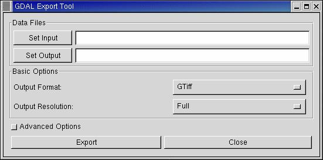

|  |
-
In the basic form of the gui, the user simply selects the input and output
file, the output file format, and the resolution of the exported file relative
to the input file (Full, 1/2, 1/4, or 1/8).
-
Data Files: The files may be specified by typing in the complete path (directories
must exist already) or selected through the file dialogs launched when the Set Input/
Set Output buttons are clicked. When the export tool is launched, it will try to find
the filename of the currently active layer and fill it into the input file field.
-
Output Format: output file format (Geotiff, MFF2, etc.).
-
To enable the advanced form of the gui, click the "Advanced Options" toggle.
-
Click "Export" to perform the conversion, "Close" to close the tool.
|